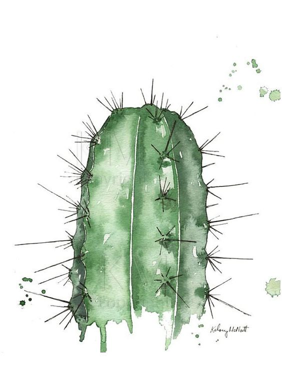

Cactuses
A really agressive cucumber
Types of Cactus
| Varieties |
Name of Cactus |
Flower Color |
| Indoor Cactus |
Bunny Ears |
No flowers |
| Chin |
Pink, red, yellow |
| Saguaro |
No flowers |
| Old Lady |
Pink |
| Star |
Yellow |
| Easter |
Pink, orange, blue |
| Moon |
No flowers |
| Outdoor Cactus |
Barrel |
Red, yellow |
| Thanksgiving |
Pink |
| Queen of the Night |
White |
| Prickly Pear |
Yellow, red, purple |
| Cholla |
Orange, green |
| Totem Pole |
No flowers |
Fun facts
- A cactus is a succulent plant of the family Cactaceae.
- Botanists estimate that there are more than 2,000 species, grouped into about 175 genera, but there is much argument about the limits of both genera and species.
- Cactuses can survive from few to 300 years, depending on the species.
- Cactuses occur in a wide range of shapes and sizes.